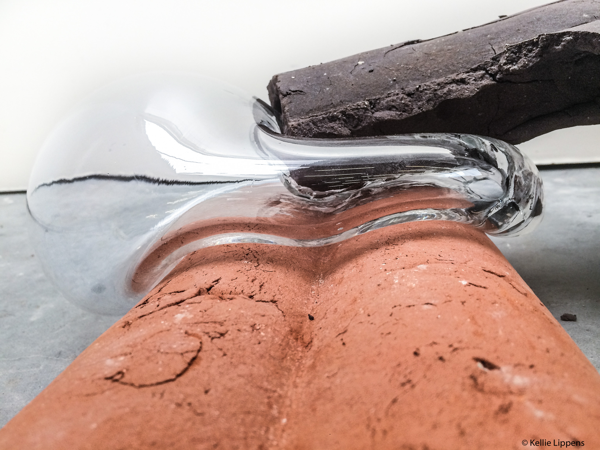

Balance through the other
Ceramics and glass│2018

Starting out my previous project 'Roots, 2018' I made a 3D drawing of my (orininal) waist.
The EKWC (European ceramics work center) made used a hot wire cutter to cut out a form from the original 3D drawing; in isomo. I wanted to grab the essence of the imperfection of the original drawing, by making a plaster mould out of the isomo form; as the isomo was too faultless. Only by pressing my clay into the plaster mould, was I able to capture the imperfections found within; such as: crevaces, tears, misformings and my own fingerprints. By suddenly seeing my fingerprints on the inside surface, pressed into the form, did it become part of the outside. Through all the imperfections found within the clay surface, the entire form became considered as a living structure.
After many uses of the plaster moulds, I began to notice that it could integrate into the eventual installation, and no longer be viewed as a functional mould, but as a sculpture instead. One of the moulds wich was specially used for glassblowing was completly scorched and disintegrated. The underlying glass fibers inside the mould eventually became visible. I withnessed the impermanence throughout the decomposition of the mould. During the process each object becomes their own character, therefore gaining individual traits.



Materiality is an important concept in the installion. The entire installation is meant to be seen as a whole, yet also as individual pieces. The balance between the diverse materials can be identified at close observation.
This 'Balance' can also be taken literaly, as glass was deliberatly blown to create a 'missing puzzle piece' for several sculptures. This can be seen when the materials, glass and clay, create a tension between them in order to stay put.